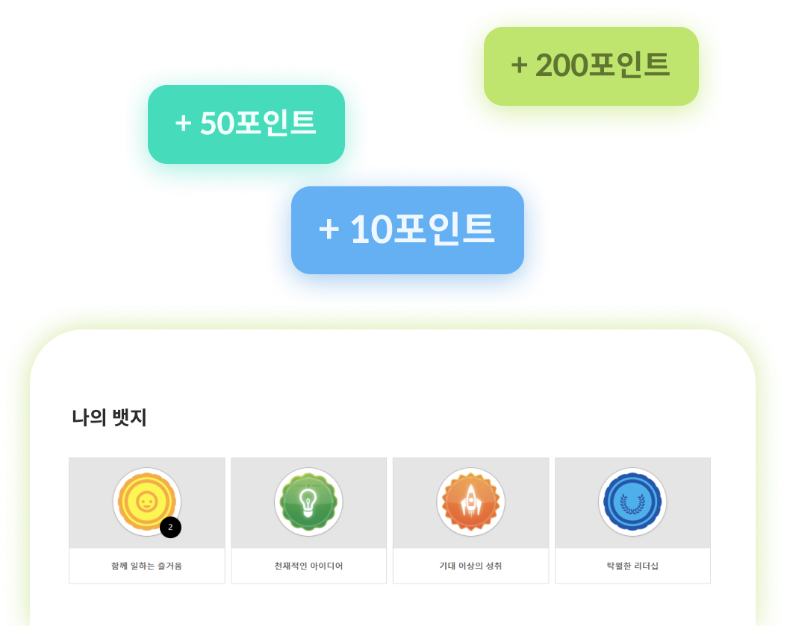

클라우드 솔루션
최첨단의 IT 인프라
99.989%
글로벌 가동률
(2019년)
보안 및 규정 준수
-

SSAE18 SOC1
& SOC2 -

ISAE 3402
Type II -
FedRAMP
Certified -
21 CFR Part 11
-
ISO 27001:2013 &
27001 Certified -
ISO 27018
-
PCI Compliand
-
GDPR & EU Data
Privacy Support
교육
한 눈에 보는
나의 학습 현황과
맞춤형 추천
사내·외 모든 교육과정을, 한 곳에서 검색하고 학습하세요.
나에게 맞는 과정은 테마, 학습이력,
직무를 기반으로 자동 추천됩니다.
 진행중인 학습
학습 이력 기반 추천 과정
직무 기반 추천 과정
진행중인 학습
학습 이력 기반 추천 과정
직무 기반 추천 과정
성과·커리어
나와 조직의 목표를
한 눈에 보기
목표 얼라인이 말 뿐인 경우가 많습니다. 코너스톤의 목표는 상위조직과 연계하여 수립하고, 진척도를 한 번에 확인합니다.

평가 프로세스를 자유롭게 구성합니다.

채용·온보딩
엑셀정리? 더 이상
필요 없어요~
지원자 현황은 한 번에
정리됩니다
우리 회사의 모든 지원자 정보는 한 곳으로 모입니다.
서류접수부터 최종 오퍼레터 발송까지~
편리하고 손쉽게 하세요.


인사운영
인사담당자는
HR 통합운영,
직원들은
HR 셀프서비스
각종 서류 발급으로 낭비하던 시간이 줄어듭니다.
직원 개개인이 셀프로 이용하게 됩니다.
인사 팀원들은 본연의 업무에 집중하세요~
입사 때 부터의 모든 기본정보, 이력정보 및 각종 이동/ 발령 정보를 한 곳에서 확인하세요.

직원의 모든 정보는
한 페이지에서 관리하세요
각종 서류 발급으로 낭비하던 시간이 줄어듭니다. 인사팀원들은 본연의 업무에 집중하세요~

코너스톤으로
전향해야 할
보다 많은 이유.
교육

개인이 자유롭게 구성하는
플레이리스트
교육
뱃지와 포인트 모으는 재미

성과·커리어


관리자에서 코치로:
조직 내 구성원과의 상시 피드백
성과·커리어

예산 안에서 합리적으로
정하는 보상
채용·온보딩

직원의 모든 정보는
한 페이지에서 관리하세요